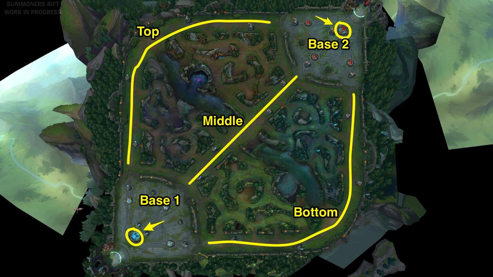

League of Legends is a popular MOBA (Multiplayer Online Battle Arena) game that requires teamwork, strategy, and quick thinking. This page will be a brief introduction to the structure and gameplay of the game.
The game in its standard form consists of two teams of five players each. The map is laid out as a relative square, with each team's base being kitty-corner from each other, one in the southwest, the other in the southeast. At the very core of both team's base is the team's Nexus. The overall goal of the game is to get to the core of the enemy's base and destroy their Nexus.
Every 30 seconds, each team's nexus will spawn a group of minions that will march down each of the three lanes. These minions are weak and don't do much damage, but they are the main source of income for players. Gold is only rewarded to whoever gets the last hit on a minion.
Outside of the teams' bases, there are three lanes: The top lane, the middle lane, and the bottom lane. There is also the jungle, which is a labyrinth of paths in between all three lanes. These lanes and jungle area are laid out as seen in the picture below.
Finally, there are sets of turrets in each lane, starting at the Nexus and spreading into the lanes. These turrets will fire at enemy minions and champions, and need to be destroyed before pushing further into the enemy base.
Before we hop into the gameplay, we need an understanding of the characters that players play as, called Champions. These champions are unique fighters have have their own sets of abilities and perks that help give them the edge in battle. These abilities will level-up throughout a game to beceome stronger and can be cast more frequently. Some characters excel in casting spells from afar to pick off enemies, while others thrive in getting up close and personal with melee weapons.
This dynamic plays into the different roles in the game and how those roles synergize with each other, which will be detailed in the next section.
Each team has 5 "roles" that players play as that have unique objectives and areas of the map that they are responsible for. These roles are as follows:
When the game starts, all 5 players on each team spawn at their shop, which is behind their Nexus. At the shop, players can buy a plethora of items with gold that they obtain from killing players, minions, or other jungle creatures. Once the players have chose their starting items, they will then head to their respective area of the map, whether that be a lane or the jungle.
As the game progresses, there will be various objectives that spawn for the two teams to contest and attempt to take control of. A few of these objectives are:
The game is unofficially split into three phases. The below table lists these three phases and describes what typically goes on during each phase.
| Early Game | Mid Game | Late Game |
|---|---|---|
| For the first 15 minutes of the game, each laner stays in their lane, killing enemy minions for gold, and the jungler goes into the jungle on the team's side to kill creature camps for gold. | For the next around 15 minutes of the game, the laners may roam to other lanes to help defend or push another lane. | From this point on, the game is pretty much all teamfights in midlane. |
| At about 10 minutes into the game, the first drake will spawn. This first drake is very important to contest and can make or break the flow of the rest of the game for that team. | A couple more drakes will spawn in this time frame, as well as the Rift Herald. The Rift Herald can be very crucial for pushing an enemy lane. | More drakes will spawn late game, one more Rift Herald, and Baron Nashor. These will be contested differently from game to game, it all depends on the flow and what the teams need. |
In the later part of the game, teams will start to group up and have teamfights, chaotic 5v5 battles where every player is throwing everything they have to try to push the enemy back and take them down. This back and forth dynamic can go on for a short amount of time or up to a half hour, depending on how each team plays and how resilient they are.
Eventually, one team will give way and the other team will get all the way to their Nexus and destroy it. When that happens, the game is over.
For more information on the game, the official website has a great "how to play" section that's a great place to start. You can find that page here.